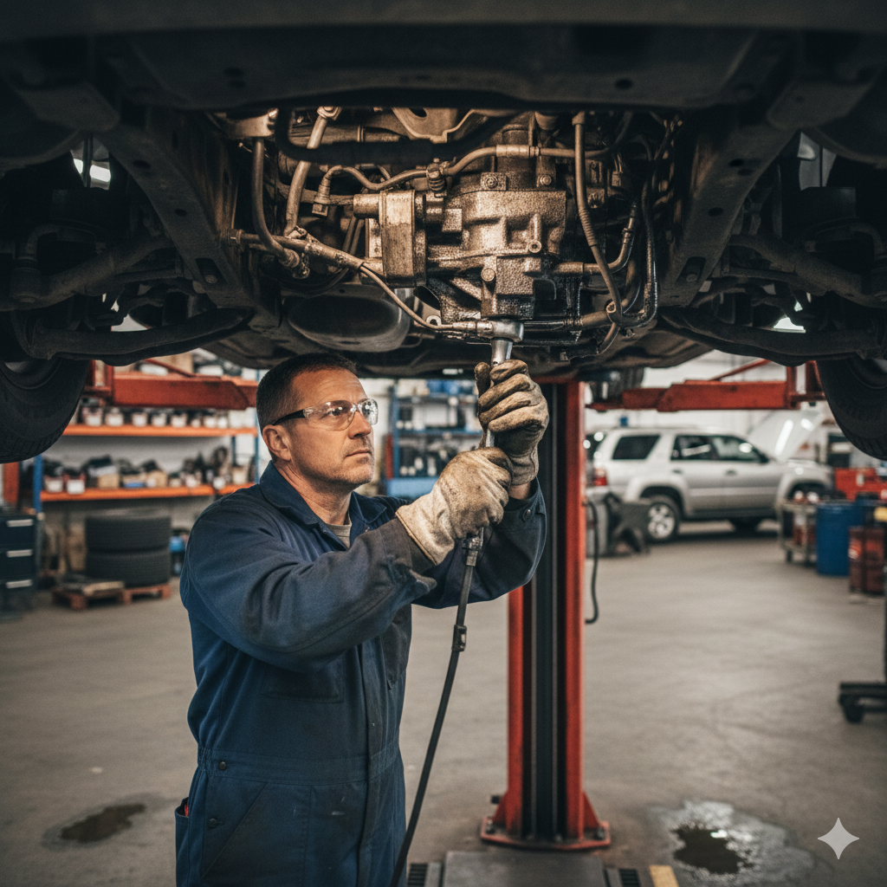

Introduction
If you are searching for dependable steering box repair Doha specialists, you already know that steering is not a comfort feature — it is a safety system. When the wheel feels heavy, vague, or noisy, every lane change on Salwa Road, every tight turn through a Doha roundabout, and every parking manoeuvre in West Bay becomes harder than it should be. Your steering box or rack and pinion assembly translates your inputs into precise wheel movement. When that system leaks fluid, wears internally, or loses hydraulic assist, control suffers fast — especially under Qatar's summer heat and dusty conditions.
At Dohar Car Repair, we diagnose and repair power steering systems for all makes and models across Qatar. Whether your vehicle uses a traditional recirculating-ball steering box, a modern rack and pinion unit, or an electric power steering module, our technicians identify the root cause — not just the symptom — and restore safe, confident handling. This guide covers why steering repair matters more in Doha, common failure causes, warning signs you must not ignore, how professionals fix steering problems step by step, maintenance habits that extend component life, costly mistakes to avoid, realistic QAR pricing, and why thousands of Qatar drivers trust our workshop for car steering service Qatar can rely on.

Why Steering Box Repair Matters in Qatar
Steering systems work under constant load. Every bump, pothole, and curb strike sends force through tie rods, the steering rack or box, and the column. In Qatar, those stresses combine with environmental factors that accelerate wear: extreme under-bonnet and ambient temperatures, fine dust infiltrating boots and seals, and stop-go traffic that keeps hydraulic pumps working hard without cooling airflow.
A failing steering box or rack does not always announce itself with a dramatic snap. More often, drivers notice gradual heaviness, growing play in the wheel, or a slow power steering leak that leaves a red or pink stain on the driveway. Left unchecked, worn steering geometry contributes to uneven tyre wear, poor alignment, and reduced emergency manoeuvrability — the kind of problem that turns a minor correction into a serious incident when swerving to avoid debris on the Expressway or navigating a flooded dip after rain.
- Safety first: Responsive steering is essential for lane changes, merging, and emergency avoidance on busy Doha highways
- Tyre protection: Worn steering components cause toe misalignment and premature tyre replacement
- Lower long-term cost: Early seal or bushing repair costs far less than full steering box replacement Doha workshops sometimes need after neglect
- Comfort and confidence: Smooth, light steering reduces driver fatigue during long commutes
- Vehicle value: Documented steering repairs support resale and inspection compliance
Steering problems rarely exist in isolation. Heavy steering can overlap with suspension repair in Doha issues — worn ball joints, control arm bushings, or sagging springs can mimic steering faults. That is why proper diagnosis at a full-service workshop matters rather than guessing at parts.
Qatar Heat & Power Steering Fluid
Power steering fluid degrades faster in Gulf heat. High temperatures oxidize hydraulic oil, weaken rubber seals and O-rings, and accelerate pump wear. Many steering leaks we see in Doha trace back to hardened seals that cracked after years of heat cycling — not sudden failure from a single event.
Common Causes of Steering Box and Rack Failure
Understanding what damages steering systems helps you catch problems before they become dangerous or expensive. These are the failure patterns we diagnose weekly at our Doha workshop:
Power Steering Fluid Leaks
Leaks are the most common trigger for power steering repair Qatar drivers report. Fluid escapes from worn rack seals, steering box input shaft seals, pressure hoses, the pump, or the reservoir. Low fluid reduces hydraulic assist, lets air into the system, and causes pump cavitation — a whining noise that often precedes pump failure. A small leak ignored for weeks can destroy both the pump and the rack.
Heat-Degraded Seals and Fluid
Qatar summers push under-bonnet temperatures well above comfortable levels. Power steering fluid that should stay clean and within spec becomes dark, foamy, or contaminated with rubber particles from deteriorating seals. Heat also affects the C-ring and internal seals inside rack-and-pinion units — once those harden, internal bypass and external weeping follow.
Dust, Sand, and Boot Damage
Rack and pinion assemblies rely on rubber bellows boots to keep grease in and grit out. Qatar's dusty air, combined with speed bumps and construction-zone debris, tears or splits those boots. Once sand enters the rack, the pinion gear and internal bearings wear rapidly. Regular visual checks of steering boots are smart car maintenance for any Doha driver.
Impact and Pothole Damage
Hard hits to wheels — from kerbs, deep potholes, or unmarked road drops — transfer shock through tie rod ends and into the steering rack or box. Internal teeth can chip, housings can crack, and alignment settings shift instantly. Areas with heavy truck traffic and older road surfaces make this a recurring issue for commuters on routes like Salwa Road and Industrial Area connectors.
Worn Tie Rods, Bushings, and Ball Joints
These components connect steering output to the wheels. Excessive play at tie rod ends creates wandering and clunking over bumps. Worn idler or pitman arms on older steering-box vehicles produce similar symptoms. Drivers often blame the box when the linkage is the actual culprit — accurate diagnosis saves money.
Pump Failure and Contamination
The power steering pump generates hydraulic pressure. Worn vanes, a slipping drive belt, or contaminated fluid starves the rack of assist. If you keep topping up fluid without fixing the leak source, you are feeding a failing system. Metal shavings from a worn rack can circulate back and destroy the pump — another reason to address leaks promptly.
Roundabout and Urban Steering Load
Doha's roundabout-heavy road layout means constant low-speed full-lock manoeuvres. Holding the wheel at full lock while parking or turning strains the pump and builds heat in hydraulic systems. Combined with already degraded fluid, that pattern accelerates seal failure — especially in older SUVs and pickup trucks used for daily family transport.

Warning Signs You Need Steering Repair
Steering problems tend to worsen gradually, which makes it easy to adapt to bad behaviour until something fails completely. Watch for these signals and act before a minor leak becomes a major repair bill — or a safety risk:
- Heavy or stiff steering: Especially at low speed — often linked to low fluid, a failing pump, or internal rack wear
- Steering wheel play or looseness: Dead zone before wheels respond; may indicate worn box, rack, or linkage
- Whining or groaning when turning: Classic sign of low power steering fluid or a struggling pump
- Fluid puddles or stains: Red or pink fluid under the front of the car points to hose, rack, or pump leaks
- Clunking or knocking over bumps: Often tie rod ends, ball joints, or worn steering box mounts
- Steering wheel vibration: Can relate to alignment, unbalanced tyres, or worn steering components
- Vehicle pulling despite straight wheel: May combine alignment issues with binding steering parts
- Burning smell near the front: Overheated pump or slipping belt — inspect immediately
- Visible torn rack boots: Dust entry will destroy the rack if not addressed quickly
If steering suddenly locks or becomes extremely difficult while driving, reduce speed, pull over safely, and do not force the wheel. Call for assistance and schedule inspection. Persistent noises after fluid top-up usually mean mechanical wear — not a simple fluid issue — and may require full car repair service in Doha beyond a quick fluid change.
How Professionals Fix Steering Box and Rack Problems
Proper steering rack repair Doha service is systematic. At Dohar Car Repair, we follow a structured process so every repair restores safe handling and eliminates leaks at the source:
-
Customer interview and road test
We discuss when symptoms appear — cold start, full lock, highway speed, over bumps — and reproduce the issue where safe. Noise, effort, and return-to-centre behaviour tell us whether the fault sits in the pump, rack, box, column, or linkage.
-
Visual inspection and fluid check
Technicians inspect rack boots, hoses, the pump, reservoir level, and under-car leaks. Fluid colour and metal contamination in the reservoir indicate internal wear severity.
-
Pressure test and leak tracing
We pressurize the hydraulic circuit where applicable and use UV dye or direct observation to pinpoint seepage at seals, O-rings, C-ring areas, or line fittings — not just the most obvious drip point.
-
Linkage and suspension correlation check
Before condemning a steering box, we measure play at tie rods, ball joints, and bushings. Misdiagnosis here wastes parts and money; correlation with suspension saves both.
-
Repair or replacement decision
Minor external seal kits, hose replacement, or pump rebuild may suffice on some units. Severely worn racks, cracked housings, or heavily pitted steering box internals typically require replacement with a quality remanufactured or new unit matched to your VIN.
-
Installation, bleed, and alignment
New or rebuilt components are fitted to torque specification. The hydraulic system is bled of air, fluid is filled with manufacturer-approved product, and wheel alignment is checked or adjusted so tyres track straight on Doha roads.
-
Road test and customer handover
We verify assist feel, noise-free operation through full lock, and straight-line stability before return. Findings, parts used, and maintenance advice are explained clearly before you drive away.
"Steering repair is never just about stopping a leak. We trace why the seal failed — heat, contamination, boot damage, or impact — so the fix lasts through Qatar summers and dusty daily driving."
Maintenance Tips for Power Steering in Qatar
Proactive care extends steering component life and keeps repair costs predictable between major services:
- Check power steering fluid monthly: Level should sit between min and max marks when warm; investigate sudden drops immediately
- Use correct fluid type: ATF, CHF, or manufacturer-specific fluid — mixing wrong products damages seals
- Flush on schedule: Every 40,000–60,000 km or per manufacturer guidance; sooner if fluid looks dark or smells burnt
- Inspect rack boots during tyre rotation: Cracks or tears need prompt boot replacement before sand ingress
- Avoid prolonged full lock at idle: Eases pump strain during tight parking in busy mall lots
- Fix small leaks early: A QAR hose repair today beats a full rack replacement next month
- Keep belts tensioned: A slipping serpentine belt reduces pump output and causes noise
- Align after suspension or steering work: Protects tyres and restores precise tracking
- Wash undercarriage after dusty trips: Reduces abrasive buildup around steering linkages
Steering health connects to overall vehicle condition. Worn engine mounts can transmit vibration through the column, and neglected lubrication elsewhere can coincide with broader wear — our team can review related needs such as engine repair in Doha or brake repair in Doha during the same visit when it makes sense for your schedule.
Fluid Type Matters
Never assume all power steering fluid is interchangeable. European vehicles often require specific CHF formulations; some Japanese models use dedicated PS fluids. Using the wrong type causes seal swelling or shrinkage — and new leaks within weeks. Bring your car to a workshop that verifies spec from the manual or database, not guesswork.
Common Mistakes Drivers Make
These errors cost Qatar motorists more money — and create more risk — than timely steering service ever would:
- Topping up fluid without fixing the leak: Masks the problem until the pump or rack is ruined
- Using incorrect or universal fluid: Damages seals designed for a specific chemical profile
- Ignoring torn rack boots: Dust destroys internal gears faster than most drivers expect
- Replacing the pump alone when the rack is worn: Metal contamination recycles and kills the new pump
- Skipping alignment after steering work: Causes tyre scrub and wandering that feels like unfinished repair
- Delaying repair because "it still turns": Gradual failure becomes sudden loss of assist or control
- Choosing the cheapest part without warranty: Substandard reman racks fail quickly in heat
- DIY rack replacement without proper bleed procedure: Air in the system causes noise, foam, and erratic assist
- Blaming tyres alone for pulling: Underlying steering play or binding gets missed
Learn more about our diagnostic standards on the about us page, and explore additional maintenance guides on our blog.
Steering Box Repair Cost in Qatar (QAR)
Steering repair pricing depends on whether your vehicle uses a rack and pinion or recirculating-ball steering box, the extent of internal wear, parts availability, and whether pump or hose work is included. Typical Doha market ranges:
- Power steering fluid flush and top-up: 80–180 QAR
- Hose or minor seal replacement: 150–400 QAR (parts and labour vary by access)
- Power steering pump replacement: 400–1,200 QAR depending on vehicle
- Rack and pinion seal kit (where available): 600–1,500 QAR
- Steering rack replacement (standard sedan): 1,200–2,800 QAR
- Steering rack replacement (SUV / luxury): 2,500–5,500+ QAR
- Steering box repair or replacement (older trucks/SUVs): 1,500–4,000 QAR
- Wheel alignment after steering work: 150–350 QAR
- Tie rod ends / linkage components: 100–300 QAR per side plus alignment
We provide clear quotes before starting work. If inspection reveals that steering wear stems from accident damage or multiple failed systems, we discuss honest options — repair versus replacement — so you can make an informed decision without pressure.
Repair vs Replace
Seal-only repairs save money when internals are healthy. Once a rack or box has internal scoring, play, or contamination, replacement is usually the durable choice. Ask for inspection photos or a clear explanation of what we found — transparency beats cheap fixes that fail again in a Qatar summer.
Why Choose Dohar Car Repair
Drivers across Doha choose Dohar Car Repair for steering box repair Doha and rack service because we combine technical depth with honest communication:
- 15+ years of local experience with Qatar heat, dust, and driving conditions that stress steering systems
- All makes and models — Japanese sedans, Korean SUVs, European luxury, American trucks, and Gulf-spec imports
- Accurate diagnosis that separates pump, rack, box, linkage, and suspension faults before parts are ordered
- Quality components with appropriate warranty — no mystery reman units that fail in weeks
- Transparent QAR pricing quoted upfront so you know the investment before work begins
- Full-system approach including bleed procedure, alignment check, and road test verification
- Convenient booking via phone, WhatsApp, or our contact page
- Integrated workshop capability for related engine, brake, and suspension work in one trusted location
From daily commuters navigating Salwa Road traffic to families relying on SUVs for school runs and weekend trips, our goal is the same: restore steering that feels precise, quiet, and safe — every time you turn the wheel.
Frequently Asked Questions
What is the difference between a steering box and rack and pinion?
A steering box (recirculating-ball type) is common on older body-on-frame SUVs, trucks, and some 4x4s. It uses a worm gear and ball bearings to convert steering input into pitman arm movement. Rack and pinion is standard on most modern cars: a pinion gear on the steering column drives a linear rack that moves tie rods directly. Both can be hydraulic or assisted by an electric motor. Symptoms overlap — heavy steering, leaks, play — but repair procedures and parts differ. Our technicians identify your system before recommending steering rack repair Doha or box service.
Can I drive with a power steering leak in Doha?
Short distances at low speed may be possible if fluid level remains adequate, but it is not advisable. Low fluid causes pump damage and sudden loss of assist — dangerous during lane changes or emergency manoeuvres. Qatar heat accelerates fluid loss once a seal fails. Top up only to reach a workshop safely, then schedule proper leak repair immediately.
How long does steering box or rack repair take?
Minor hose or fluid service may finish within a few hours. Rack or steering box replacement typically requires half a day to a full day depending on vehicle access, alignment needs, and parts availability. We advise estimated completion time when you book so you can plan alternative transport if needed.
Why does my steering feel heavy only when the engine is cold?
Cold, thickened fluid or a weak pump may provide less assist until the system warms. Worn pump vanes, contaminated fluid, or internal rack binding can worsen the effect. In Qatar, even "cold" mornings are mild compared to winter climates, so persistent cold heaviness usually indicates mechanical wear or wrong fluid viscosity rather than normal behaviour. Inspection is recommended.
Do I need a wheel alignment after steering repair?
Yes, whenever tie rods, rack, or steering linkage are disturbed. Alignment ensures wheels point correctly and prevents rapid tyre wear. Skipping alignment after steering box replacement Doha work is one of the most common post-repair mistakes — the car may track poorly even if the new part is installed perfectly.
How can I prevent steering problems in Qatar's climate?
Use the correct power steering fluid, flush on interval, fix leaks and torn boots promptly, avoid holding full lock at idle for long periods, and inspect fluid level monthly during summer. Parking in shade reduces under-bonnet heat soak slightly, but regular professional checks matter more than any single habit. Pair steering care with suspension inspections — worn components often appear together on Qatar's mix of smooth highways and rough side streets.
Conclusion
Reliable steering is non-negotiable on Doha's busy roads. Heat degrades fluid and seals, dust attacks exposed boots, roundabouts and tight parking stress hydraulic pumps, and small leaks become major failures when ignored. Professional steering box repair Doha service restores the precise, light control you expect — whether that means sealing a rack, replacing a worn steering box, renewing a pump, or correcting linkage play before it compromises safety.
Do not wait until the wheel feels dangerously heavy or the leak empties your reservoir. Contact Dohar Car Repair for expert power steering diagnosis and repair across Qatar. Call 0097472223959, message us on WhatsApp, or visit our contact page to book your inspection. Safe handling starts with a steering system you can trust — let us restore yours today.